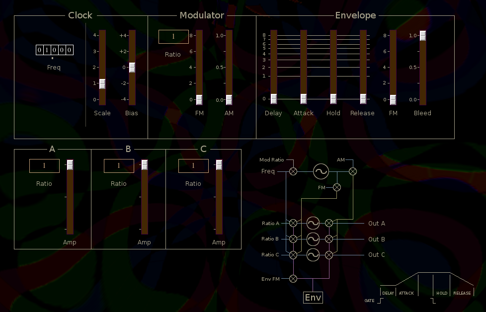

Lfo3
 Previous( lfo2 )
Next( cascade )
Home
Contents
Previous( lfo2 )
Next( cascade )
Home
Contents
LFO3 is a complex triple LFO with phase shifts of 0, 120 and 240 degrees between the LFOs. A fourth LFO is used for modulation of the primary LFOs.
Clock
The clock section sets a reference frequency. All LFO frequencies are relative to the clock rate.
Scale, Scale factor applied to all primary LFOs.
Bias, Bias added to the three primary LFOs.
Modulator
Ratio button, Modulator LFO frequency relative to clock
FM, Amount MOD Fm applied to primary LFOs frequency modulation.
AM, Amount MOD Fm applied to primary LFOs amplitude modulation.
Envelope
LFO3 is monophonic in the sense that the envelope triggers on the first key down and does not release until all keys have been lifted.
Delay, Onset delay time.
Attack, Attack time after initial delay.
Hold, Envelope hold time after all keys have been lifted.
Release,Envelope release time after hold period.
FM, Application of envelope to LFO frequency.
Bleed, Amount LFOs bleed through envelope.
LFO A, B and C
The three primary LFOs are identical except they have a phase shift relative to each other. LFO B is 120 degrees from LFO A, and LFO C is 120 degrees from LFO B.
Ratio button, Sets LFO frequency relative to clock.
Amp, Sets LFO amplitude.
Buses
outbusA, LFO A output
outbusB, LFO B output
outbusC, LFO C output
LFO3 Parameters
- lfScale, nbsp; Global scale factor (0,4)
- lfoBias, nbsp; Global bias (-4,+4)
- lfoFreq, nbsp; Master clock frequency (0,99.999)
- lfoModFreq, nbsp; Modulator frequency
- lfoFM, nbsp; Modulator FM depth (0,8)
- lfoAM, nbsp; Modulator AM depth (0,1)
- lfoDelay, nbsp; Envelope onset delay (0,8)
- lfoAttack, nbsp; Envelope attack time (0,8)
- lfoHold, nbsp; Envelope hold time (0,8)
- lfoRelease, nbsp; Envelope release time (0,8)
- lfoEnvToFreq, nbsp; Amount envelope applied to FM (0,8)
- lfoBleed, nbsp; Envelope bleed (0,1)
- lfoRatioA, nbsp; LFO A ratio
- lfoRatioB, nbsp; LFO B ratio
- lfoRatioC, nbsp; LFO C ratio
- lfoAmpA, nbsp; LFO A amp (0,1)
- lfoAmpB, nbsp; LFO B amp (0,1)
- lfoAmpC, nbsp; LFO C amp (0,1)
Previous( lfo2 ) Next( cascade ) Home Contents